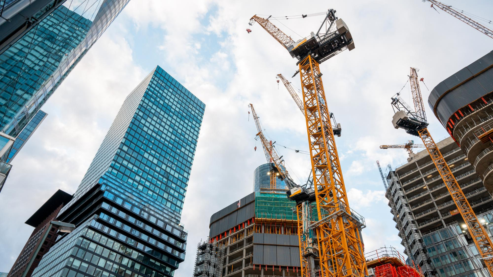
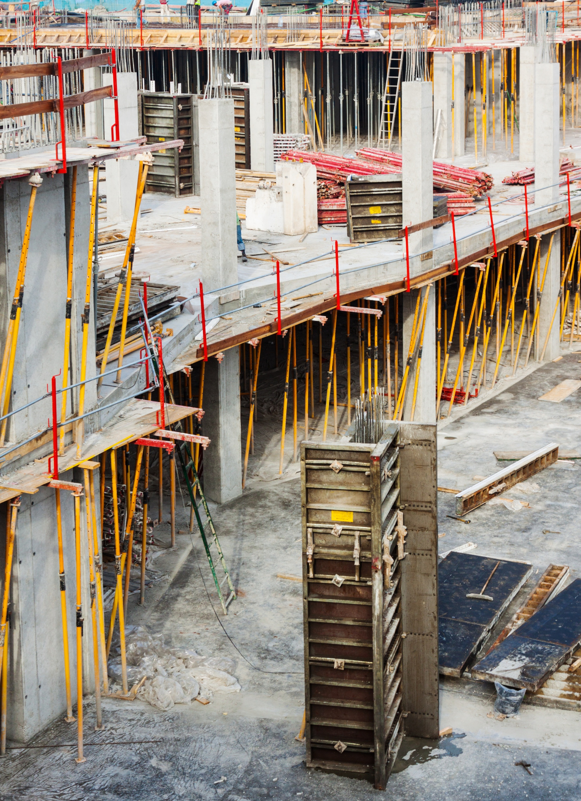
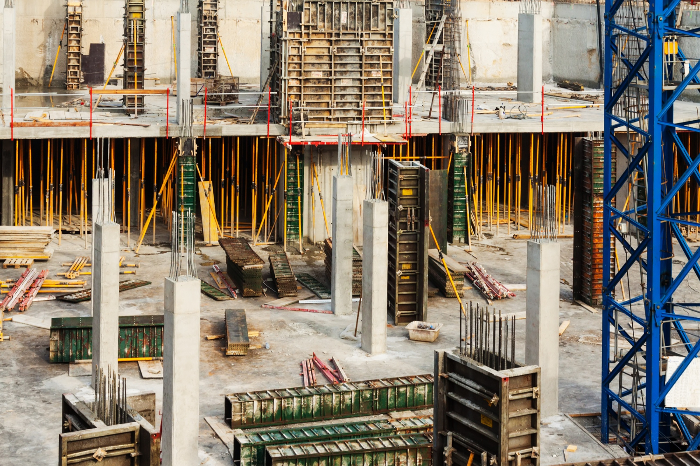

Analitik Progres Fisik
Status: Aktif
Direktur Utama
ED
Sesuai Jadwal
68.4%
Progres Aktual
Rencana
70.2%
Progres Rencana
Deviasi
-1.8%
Selisih Jadwal
Peringatan
142
Sisa Hari
Kurva-S Proyek (Progres Kumulatif)
Rencana
Aktual
Rincian Fase Konstruksi
Pondasi & Tiang Pancang
100%
Struktural Utama
85%
Sistem MEP
42%
Penyelesaian Arsitektural
12%
Log Aktivitas
Hari ini, 10:30 Siang
Pengecoran beton Kolom C4 - Lantai 12
Kemarin, 04:15 Sore
Pemeriksaan tulangan besi Sayap Barat selesai
23 Apr, 09:00 Pagi
Kedatangan material: Balok Baja Struktural
Dokumentasi Lapangan (Galeri Langsung)

Tinjauan Lokasi (Foto 1)
DIUNGGAH OLEH PENGAWAS

Detail Struktural (Foto 2)
DIUNGGAH OLEH PENGAWAS

Inspeksi Material (Foto 3)
DIUNGGAH OLEH PENGAWAS